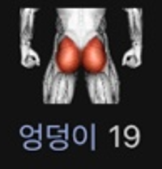
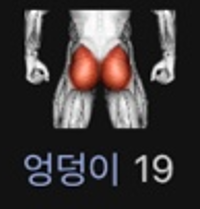

1997
Jan
Feb
Mar
Apr
May
Jun
July
Aug
Sep
Oct
Nov
Dec
SUN MON TUE WED THU FRI SAT
26 27 28 29 30 31 01
02 03 04 05 06 07 08
09 10 11 12 13 14 15
16 17 18 19 20 21 22
23 24 25 26 27 28 29
30 01 02 03 04 05 06
 
